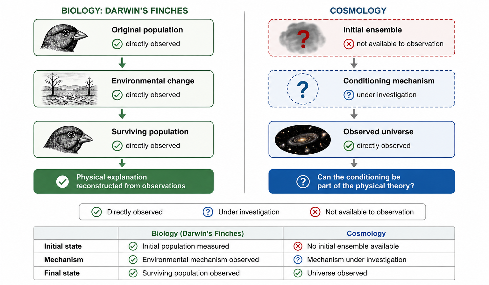
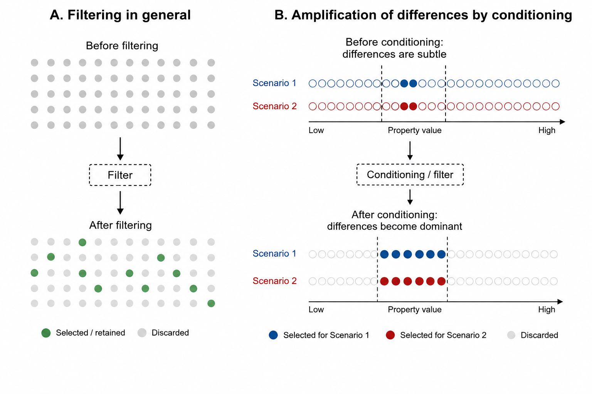
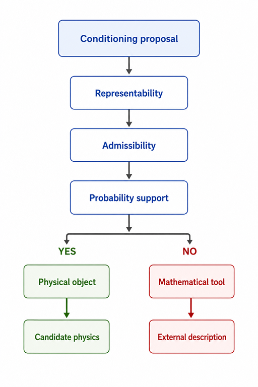

The previous chapter showed why the analogy with Darwin's finches eventually reaches its limit. In biology, the original population, the environmental change and the surviving population can all be observed. Natural selection can therefore be reconstructed directly from evidence.
Cosmology is fundamentally different. We observe only one realized universe. Neither the ensemble of possible histories nor any physical process that might distinguish between them is directly accessible. The very ingredients that made the Grants' work so convincing are precisely those that are missing.

Nevertheless, theoretical cosmology routinely compares different possible histories by introducing conditioning. Mathematically, this simply means that not every possible history contributes equally to the final predictions. Some histories are given greater weight, while others become less important or are excluded altogether.
Nothing mysterious has happened. Conditioning is a familiar mathematical operation. It reorganizes the comparison between possible histories. Just as changing environmental conditions altered which differences mattered among Darwin's finches, conditioning can dramatically alter which differences between cosmological theories become visible.

At this stage, however, conditioning remains only a mathematical prescription. The equations themselves do not tell us whether the conditioning represents something that could genuinely occur in nature or whether it is simply a useful way of organizing calculations. The central question therefore becomes:
When is a conditioning allowed to enter the theory as a physical object?
The mathematical work underlying this essay approaches this question through three source requirements. These are not new laws of physics. Rather, they are consistency requirements that every proposed conditioning must satisfy before it can be interpreted as part of the physical theory.

The first requirement asks whether the conditioning can be represented within the mathematical language of the theory. The second asks whether that representation is physically admissible according to the established framework of quantum cosmology. The third asks whether the proposed object can consistently support the probability assignment it is intended to define. This final requirement is where the decoherence results become essential, because they determine which probability assignments can actually be maintained.
Taken together, these three source requirements form what we shall call the audit. The audit does not determine whether nature actually performs a particular conditioning. Instead, it establishes something more modest but equally important: whether a proposed conditioning is sufficiently consistent to enter the theory as a candidate physical object. If the requirements are not satisfied, the conditioning remains a perfectly legitimate mathematical tool, but its role is descriptive rather than physical.
Passing the audit is therefore not the end of the story but the beginning of a new one. Once a conditioning has become a legitimate candidate for inclusion in the physical theory, an important question immediately follows. What observable consequences should such a conditioning have? Can it explain why theories that initially differ only imperceptibly may ultimately lead to dramatically different predictions? That question brings us to the final chapter.